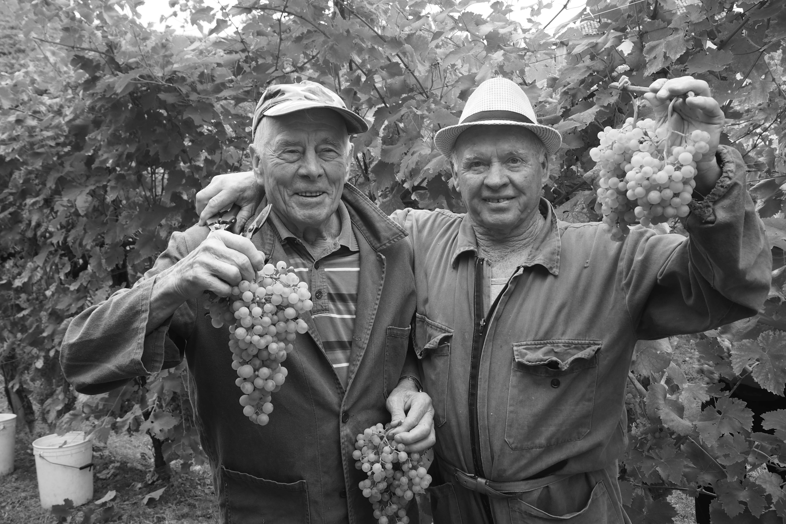
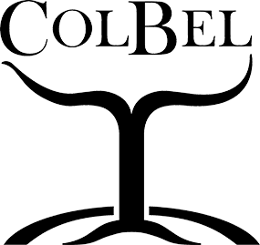
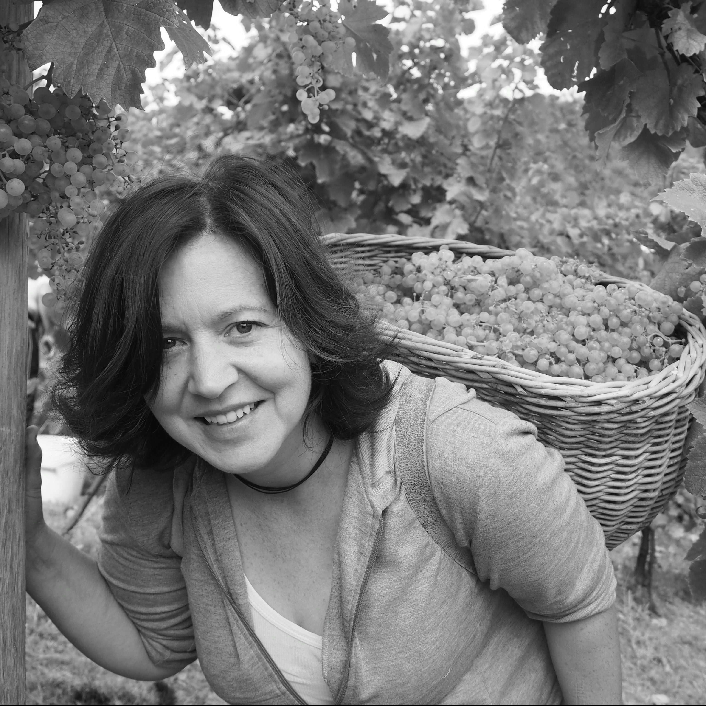
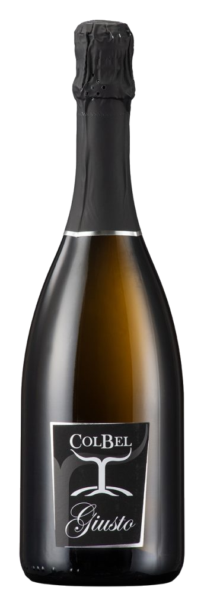
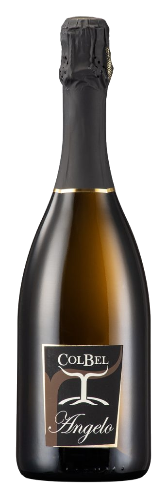
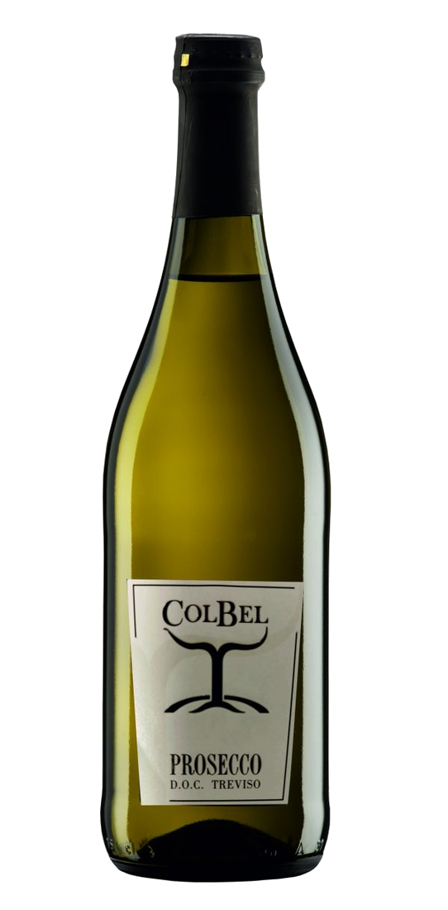
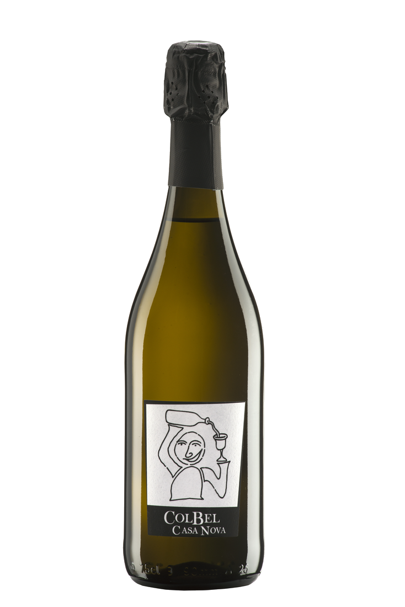
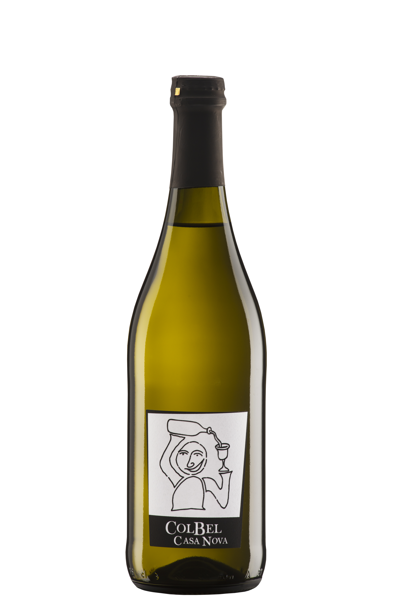
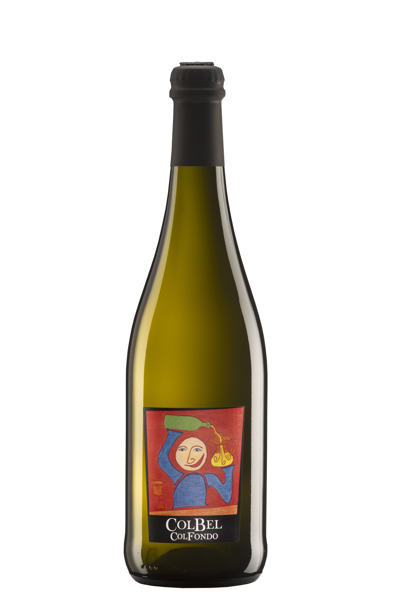

Omaggio a Nonno Giusto
Giusto era il nonno che per primo lavorò i vigneti che oggi danno vita a questo vino. Il suo nome onora una storia di famiglia iniziata su queste colline.


Una tradizione, un'emozione
Coltiviamo la passione per il Conegliano Valdobbiadene Prosecco Superiore DOCG sulle storiche colline di Solighetto.

«Col Bel» in dialetto veneto significa «bel colle». Il Colbel sorge a Solighetto, nel comune di Pieve di Soligo, e su di esso è sito il vigneto da cui, da generazioni, la famiglia di Gianni Teo produce prosecco.
Crescendo fra le colline del prosecco, Gianni sviluppa una profonda passione per l'enologia, laureandosi all'Università di Padova. Durante un percorso di ricerca avanzata a Davis, in California, incontra Lissa, biologa texana.
Il loro legame sboccia in amore autentico e nella scelta di costruire il loro futuro in Italia: nel 2004 nasce l'Azienda Agricola ColBel. Oggi, affiancando la produzione di bollicine d'eccellenza, ColBel accoglie gli ospiti nella nuova sala degustazione con i sapori genuini dell'agriturismo.
Dal nostro agriturismo, nelle giornate terse, lo sguardo spazia fino alla romantica Laguna Veneta. Nelle ore serali, una brezza gentile risale la pianura donando alle nostre uve Glera un'acidità vibrante e aromi inconfondibili.
Vieni a Trovarci a Solighetto
Giusto era il nonno che per primo lavorò i vigneti che oggi danno vita a questo vino. Il suo nome onora una storia di famiglia iniziata su queste colline.
Pendenze scoscese baciate dal sole e rinfrescate dalla brezza serale che sale dalla Laguna Veneta, donando alle uve Glera acidità e sapidità uniche.
Bollicina sottile e persistente. Al naso profuma di mela cotogna, pera croccante e fiori di glicine. Asciutto, elegante e straordinariamente armonioso.
Perfetto dall'aperitivo a tutto pasto, accompagnato dal nostro pane cotto a legna e dalla soppressa della cantina seicentesca.
Spedizioni dirette dalla cantina a casa vostra in tutta Italia • IVA inclusa • Minimo 6 bottiglie
Giusto era il nonno che per primo lavorò questi vigneti con passione instancabile. Riporta nel calice le tipicità più pure del vitigno e dell’annata: straordinariamente equilibrato ed elegante, con profumi delicati di mela cotogna, fiori di campo e crosta di pane.
Dedicato ad Angelo, custode delle tradizioni di famiglia. Combina l’aroma caratteristico della varietà Glera con una sapidità vellutata e un perlage finissimo. Al palato è fresco, morbido ed equilibrato, con profumi avvolgenti di pera Williams, mela Golden e fiori di glicine.


Gradevole freschezza e vivacità immediata. Profumi fragranti di pera fresca e mela renetta accompagnati da sfumature floreali di acacia. Secco, beverino ma morbido grazie alla sua acidità bilanciata: il compagno ideale per aperitivi informali e convivialità.
La versione spumantizzata dell'iconico Casa Nova. Fresco, vivace e contemporaneo: profumo floreale fragrante con accenti di mela verde e scorza di cedro. Ottimo sia per aperitivi di carattere sia per accompagnare risotti di terra, crostacei e piatti di mare.


Il più immediato, sincero e conviviale dei nostri vini. Rifermentato in autoclave per esaltare i profumi varietali dell'uva fresca. Base d'elezione per l'autentico spritz veneto o servito ben fresco in abbinamento ad antipasti rustici e focacce calde.
L’autentico ambasciatore dei vecchi vignaioli trevigiani. Il vino riposa e matura sui propri lieviti indigeni direttamente in bottiglia, creando un profilo minerale, secco e straordinariamente gastronomico. Tradizionalmente scaraffato o servito velato con pane caldo e soppressa.

Dalla visita tra i filari al brindisi conviviale: scegli l'esperienza su misura per te a Solighetto.
Nella cucina di Lissa i frutti della terra diventano conserve, composte e verdure in agrodolce. I salumi stagionano nell'antica cantina seicentesca di Casa Teo rinfrescata dai gelsi secolari, e il pane è sfornato caldo con farina di grano antico "Giorgione". Nel weekend è aperta la spuntineria su prenotazione.